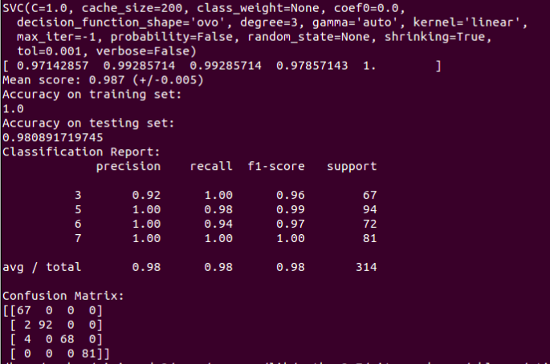
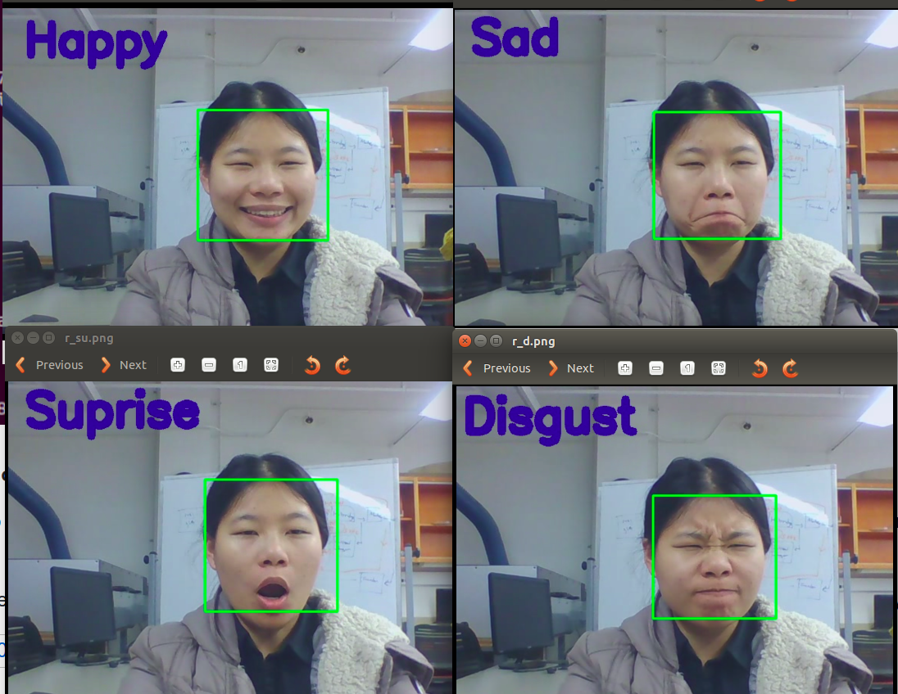
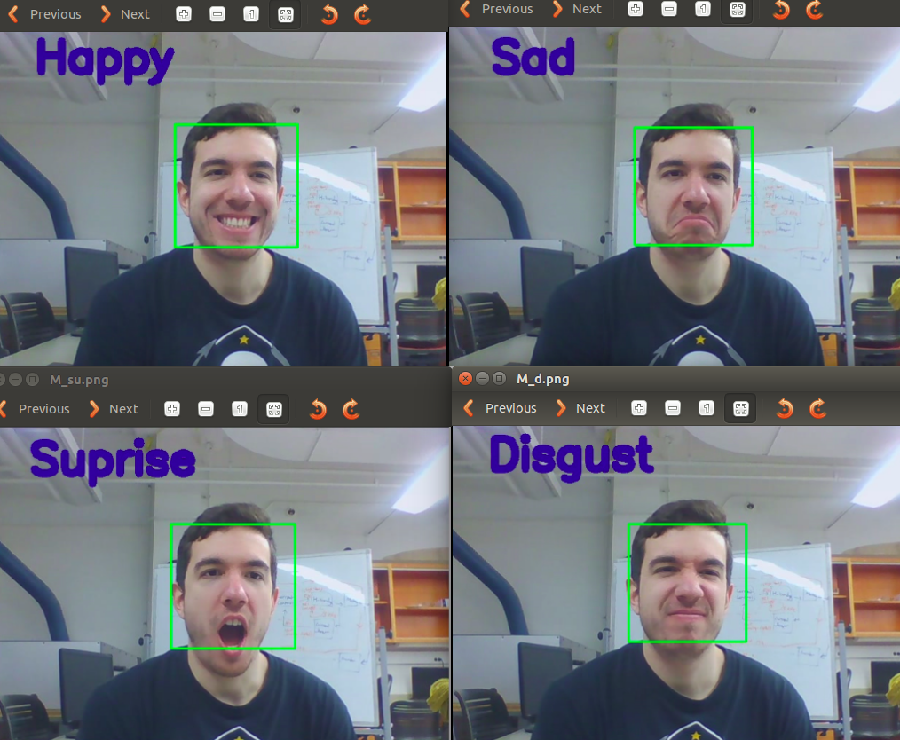
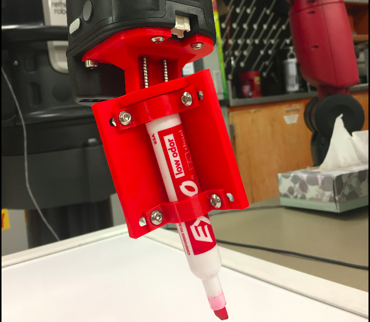
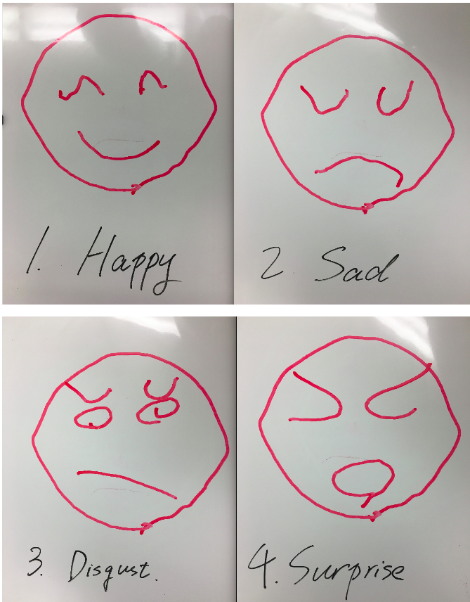

Goal
This project has two parts. The first part is about multi-emotion classification (happy, sad, surprise and disgust) based on OpenCV and SVM algorithm. The second part is about Baxter drawing control based on joint trajectory action server, Baxter can draw a specific face based on the detected emotion.
You can see the code here.
Emotion classification based on OpenCV and machine learning
1. Dataset
The Cohn-Kanade AU-Coded Facial Expression Database is for research in automatic facial image analysis and synthesis and for perceptual studies.
I choose and relabeled data for four emotions: happy (302), sad (238), surprise (256) and disgust (218).
2. Data pre-processing
1). Use OpenCV Haar cascade to detect human face, and transform it to gray;
2). Extract a new face based on offset coefficients, and reshape it to a 64*64 image;
3). Extract face features based on dense SIFT.
3. Machine learning
Use SVM machine learning algorithm for training and prediction. The kernel is "linear", and multiclass classification method is One-Vs.-One.
In this project, I choose training data: testing data = 7:3.
4. Result
Use 5 folds cross-validation to calculate mean score. And then calculate accuracy for training and testing set (98%), and shows the classification report and confusion matrix.
5. Live detection based on webcam
Use OpenCV to capture each frame of the video and do the same pre-processing for the frame. It can show the emotion it detects.
During live detection, 'Disgust' is hard to detect for some people, and other emotions are easy to be classified for everyone.  
Baxter drawing control based on joint trajectory action server
1. Introduction
I design four simple faces to represent happy, sad, surprise and disgust. Then I use joint trajectory action server for the Baxter drawing control. When Baxter get the drawing command, it will use inverse kinematics to calculate a list of reference angles for each joint for baxter arm moving, which based on the trajectory and time setting. There is a code walkthrough for joint trajectory client.
'Control.py' is based on move_to_joint_positions and 'trajectory.py' is based on joint trajectory action server.
2. Baxter hand
In this project, Baxter uses a new designed hand to capture the pen. The new hand has springs, which makes the pen more flexible on the vertical direction.
3. Result
Here is the drawing results for Baxter drawing.
Part 3: Reference